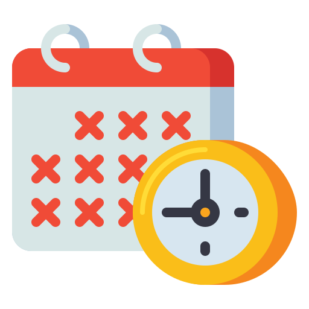
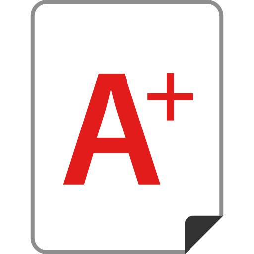

UNIVERSITAS
Nama Pengguna
🟢 online
Main Menu Peserta Ujian
Dashboard
Informasi Kampus
 Absen Kampus
Absen Matkul
Materi
Tugas
 Hasil Ujian
Menu Dashboard Mahasiswa
Mode Gelap
Keluar
Selamat Datang
Gunakan menu di sebelah kiri untuk mengakses fitur.
Kelola Data Mahasiswa
 Dashboard
Dashboard Informasi Kampus
Informasi Kampus Materi
Materi Tugas
Tugas